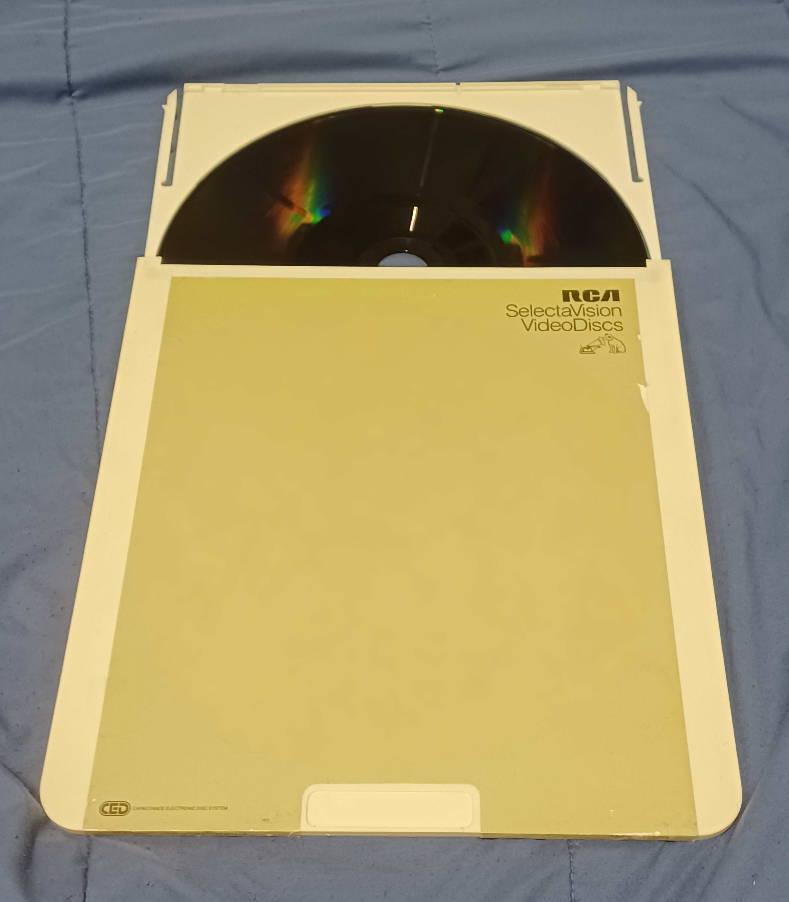
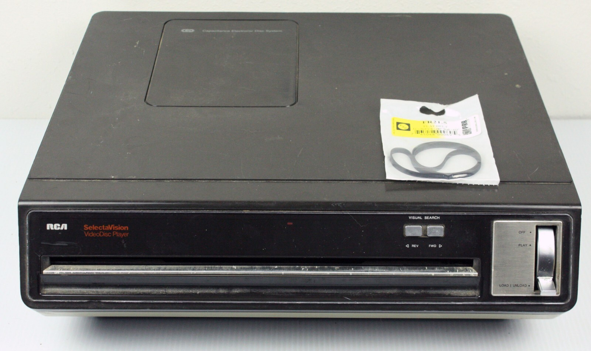

RCA SelectaVision CED Videodisc
A video disc read by a diamond stylus riding a groove — loaded by a ritual of inserting a caddy, flipping a lever, and pulling the empty shell back out

Overview
RCA's SelectaVision CED (Capacitance Electronic Disc) system, launched in 1981, stored an hour of video on a flexible conductive disc held inside a rigid protective caddy. Unlike the laser-based LaserDisc and later CD, CED was a mechanical contact system: a diamond stylus rode the disc's spiral groove and read the signal capacitively, the same physical principle as a phonograph record but at far higher groove density. The player's interaction was a deliberately engineered ritual. The user inserted the sealed caddy into a slot; a lever on the caddy was then flipped from Load to Play, which caused the player to draw the disc out of the shell and onto its spindle while retaining the empty spine; when the programme ended, the user slid the still-empty caddy back in and flipped the lever to the other position to have the disc returned. The disc itself is never touched by hand — an early consumer example of the medium and its handling being fully mediated by the machine.
Deep dive
The CED experience was built around preventing the user from ever cleaning, flipping, or exposing the disc. The caddy protected the flexible disc at all times; the player unloaded and reloaded it internally. Inserting a caddy, flipping the Load/Play lever, pulling the empty shell out while the disc stayed sealed inside the machine, then reversing the whole sequence to eject — this choreography is the interface, and it made the machine feel more like a jukebox mechanism than a tape deck.
A keel-tipped diamond stylus tracked the groove and detected minute capacitance variations, converting them into the video signal. Because it physically touched the medium, the disc was the wear-prone part, but the stylus's tiny tracking force and the disc's lubricated conductive layer were engineered to make hundreds of plays plausible. This put CED on an economic scale with VHS, which is why RCA bet on it against the laser disc.
RCA had researched the concept since the 1960s, and CED reached market in 1981 as a cheaper alternative to LaserDisc. It briefly succeeded on price before the VCR's recordability and rental ecosystem crushed it; RCA discontinued the format in 1984, and CED remains the shortest-lived of the consumer videodisc formats.
CED is a clean specimen of interaction-as-maintenance-avoidance: the designer's real product was a handling protocol, and every mechanical choice exists to keep the user's hands off the medium. It is the physical-ritual counterpart to the same era's software concerns about floppy and cartridge care.
Team & pioneers
- RCA. Developed and marketed the Capacitance Electronic Disc system through its Laboratories and Consumer Electronics Division.
- RCA Laboratories. Carried out the decades of research on groove-based capacitive video readout that made the sealed-caddy format possible.
Media
